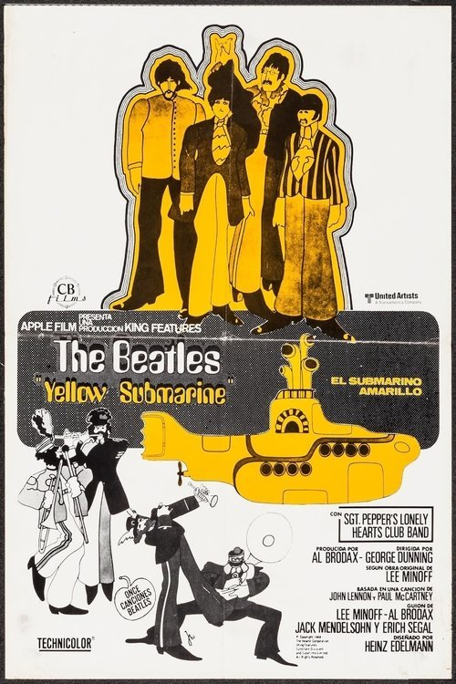

The Beatles: Yellow Submarine (1968)
Sinopsis Rápida
Sumérgete en un viaje psicodélico con los Beatles mientras navegan en el submarino amarillo hacia Pepperland, una tierra mágica amenazada por los siniestros Blue Meanies.
Sinopsis Detallada
En una aventura animada vibrante y llena de imaginación, los Fab Four se embarcan en una misión para salvar Pepperland, un paraíso musical invadido por los malévolos Blue Meanies. A bordo del icónico submarino amarillo, junto al Capitán Fred, los Beatles enfrentan desafíos surrealistas y criaturas fantásticas en un viaje que celebra la música, la paz y la lucha contra la negatividad. La película es un festín visual de colores vibrantes y animación innovadora para la época, y su banda sonora inolvidable sigue siendo un clásico. Un viaje visual y auditivo imperdible para fanáticos de los Beatles y amantes de la animación.
¿Por qué tenés que verla?
- Una experiencia visual y auditiva única, con la icónica música de los Beatles.
- La animación innovadora y psicodélica, que influyó en generaciones de artistas.
- Su legado perdurable en la cultura pop y la animación, convirtiéndose en un clásico instantáneo.
- Una historia simple pero con un mensaje poderoso sobre la paz y la creatividad.
Idea Extra
Análisis de la influencia de la contracultura y el movimiento psicodélico en la estética y la narrativa de 'Yellow Submarine'.
{{CONTENIDO_RELACIONADO}}